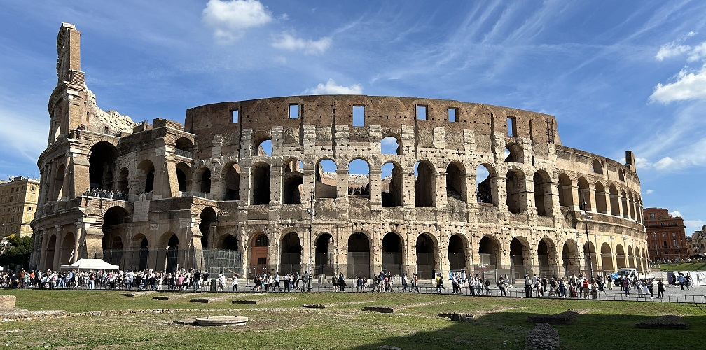
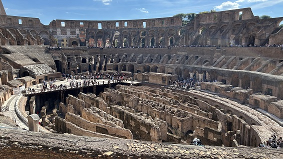
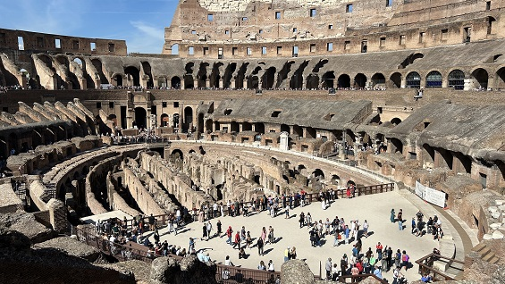
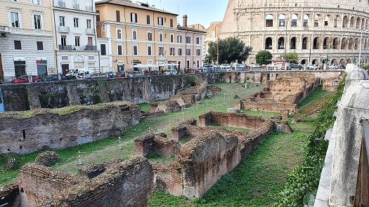
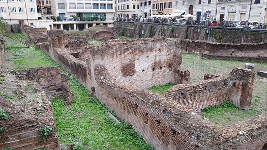

|
Amphiteatrum Flavium

“COLISEO”.
El anfiteatro fue ordenado construir por Vespasiano en el 72 para
inmortalizar el nombre de los Flavios. Fue inaugurado por Tito en el 80,
después de ocho años de duro trabajo. Tiene una altura de 50m, construido
con sillares de travertino. Su planta elíptica mide 188x156m, con una
circunferencia de 527m. y una altura de 57m. Tenía capacidad para unos
60.000.- espectadores. Consta de tres series de arcos superpuestos, con 80
arcos numerados, coronados por un ático de sillares decorados con
pilastras salientes. Sus semicolumnas son de orden dórico en la planta
baja, jónico en el primer piso y corintio en el segundo piso. Se accedía
por cada uno de los 80 arcos, 76 entradas para el público y cuatro
especiales de la que se conserva una, la entrada del emperador. Se
identifica por la placa del Papa Pío. Cada espectador recibía una tablilla
de madera que le indicaba porque arco debía de acceder.
El arquitecto o arquitectos que lo diseñaron son desconocidos. Poderosos
arcos de medio punto sostienen las bóvedas anulares, sobre las que se
asientan los diferentes niveles de gradas. Los arcos se encuentran
flanqueados por semicolumnas y rematados por dinteles. Las arcadas estaban
presididas por la presencia de numerosas esculturas que actualmente ha
desaparecido. Los arcos del segundo y tercer piso estaban adornados por
160 estatuas.
Sobre 240 ménsulas de los arcos superiores se apoyaban las vigas de madera
que sostenían el velarium. Se conservan 5 de las 160 piedras del anclaje
exterior y parte del pavimento original. A la arena
del Coliseo se podía acceder por dos entradas, en el eje mayor, la porta
triunfalis por donde entraban los gladiadores y la porta libitinaria por
donde se retiraban los cadáveres. Medía 76x46m. La arena estaba recubierta
de un entarimado de madera que escondía las galerías y maquinaria para los
juegos. El muro de la arena media 4m de altura y sobre este, estaba la
barandilla de mármol blanco con el nombre de los senadores.
|
 |
Actualmente se observan los subterráneos con sus dependencias y
pasillos. Del graderío se conserva parte de las bóvedas. Se
reconstruyó una parte con 7 escalones. Augusto solo permitió que las
mujeres disfrutaran de los juegos desde la última grada. El Coliseo
tenía muchas fuentes de agua y letrinas. Alrededor del
Coliseo estaban los edificios auxiliares, el ludus magnus,
un campamento donde se alojaban los marineros que accionaban el velarium,
cuarteles para los gladiadores de distintas etnias, un depósito de armas,
un almacén para los elementos escénicos, el saenarium para el cuidado de
los heridos y el espoliarium donde se desvestían y acumulaban los
cadáveres.
La historia de sus restauraciones y añadidos es numerosa; durante el
reinado de Tito y Domiciano se le añadió la cuarta planta.
La Meta Sudans data del siglo I, era un lugar público situado en un
valle por el que discurría un riachuelo. Era una fuente de forma
cónica que en el siglo II los gladiadores se refrescaban en sus
aguas antes de los combates en el Coliseo.
Hasta hace poco estaba escondida bajo una carretera pero Mussolini
en 1936 destruyó la Meta Sudans, la fuente situada junto al Arco de
Constantino. Actualmente son visibles sus cimientos. |
|

|
 |
|
|
|
Su nombre viene por la enorme escultura de bronce simbolizando al sol que
erigió Nerón, el Colosseo, en el lugar en el que Nerón tuvo su suntuosa
residencia, la Domus Aurea, sobre la que se edificó el anfiteatro. El
Coloso de Nerón era una estatua que representaba a Nerón. Estaba realizada
en bronce y media unos 30 ó 35m. Estaba situada frente a la
plataforma del Templo de Venus y Roma. Posteriormente Adriano cambió su
ubicación, situándola junto al anfiteatro. Los restos que se conservaban
de dicho pedestal fueron destruidos en 1936 y se construyó un pequeño
jardín para indicarnos su ubicación.
Los juegos fueron abolidos en el año 438, el último espectáculo de
venationes se celebró el año 523, el edificio estaba en estado
ruinoso por el abandono y los terremotos.
Los espectáculos fueron prohibidos en el siglo V y poco a poco sus
piedras fueron utilizadas en la construcción de palacios y otros
monumentos.
Paulatinamente sus piedras fueron utilizadas en la construcción de
palacios y otros monumentos. En la Edad Media la familia de los
Frangipane lo transformó en
fortaleza. Algunos temblores derribaron en parte el
mármol que lo revestía, y posteriormente fue utilizado como cantera para
otras construcciones desde el siglo XV se extrajeron su bloques de
travertino, y los pernos de cobre, hasta mediados del siglo XVIII, cuando
fue consagrado por el Papa Benedicto XIV, en honor de los mártires
cristianos y comenzó su conservación. |
En junio de
2010 un grupo de investigación de la UCA, localizaron dos epígrafes con el
texto GADITANORUM, 'de los gaditanos'.
Estas inscripciones se grabaron sobre los peldaños del graderio y, según
los investigadores, aluden al espacio reservado para los miembros de las
familias gaditanas residentes en la ciudad. No se documentan hasta la fecha
otras alusiones a la reserva de asientos para miembros de
familias pudientes de otras ciudades romanas en el Coliseo, de ahí lo
excepcional del caso. Están datados a finales del siglo II o principios
del III.

Ludus
Magnus
Era una escuela de gladiadores situada a
escasos metros del Anfiteatro Flavio en el valle situado entre el
Celio y el Esquilino, data de época de Domiciano. Fue construido en
su mayor parte en ladrillo, sobre otro edificio comercial del siglo
I. Tenía una altura de tres plantas. El complejo tenía un patio
rodeado por los alojamientos. En medio del patio se encontraba un
pequeño anfiteatro para el entrenamiento de los gladiadores.
Se conserva la mitad de la arena y parte de los barracones que la
rodeaban; el resto del edificio se encuentra bajo las edificaciones
modernas. Medía 63 metros de largo por 49 de ancho, una capacidad de
3.000 espectadores. En el siglo VI fue utilizado como lugar de
enterramientos.
El Ludus Magnus fue una de las cuatro escuelas de gladiadores
creadas por Domiciano, las otras tres se llamaban Dacia, Galica y
Matutinus. |
|
 |
 |
Anfiteatro Castrense
El Anfiteatro Castrense data
del s. III. Se localiza en las proximidades de la iglesia de Santa Croce
in Gerusalemme.
Junto al Coliseo y al Ludus Magnus, Son los únicos anfiteatros que se
conservan en Roma. De forma elíptica, tiene unas dimensiones de 88
metros de largo, y de 75,80 metros de ancho. Fue construido en su mayor
parte con ladrillo, posiblemente en época de Heliogábalo. Tenia 3
plantas, de las cuales sólo se conservan la primera y parte de la
segunda. Durante el reinado de Aureliano, al construir la muralla el
anfiteatro se incorporó a esta y las arcadas exteriores fueron tapiadas.
|